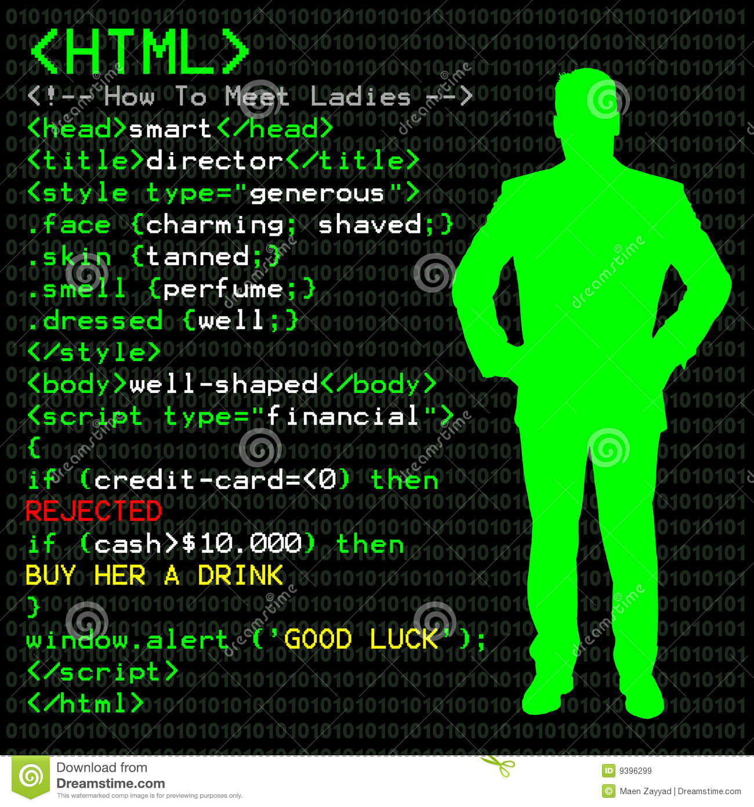

Home
A Brief Intro to Programming Languages
Programming, or coding, is like solving a puzzle. In a human language like French or Arabic, the puzzle might be the translate a sentence perfectly. In programming, the puzzle could be to make a web page look a certain way, or to make an object on the page move. So, when a web designer is given an end goal like "create a webpage that has this header, this font, these colors, these pictures, and an animated unicorn walking across the screen when users click on this button," the web designer's job is to take that big idea and break it apart into tiny pieces, and then translate these pieces into instructions that the computer can understand -- including putting all these instructions in the correct order or syntax.
Every page on the web that you visit is built using a sequence of separate instructions, one after another. Your browser (Chrome, Firefox, Safari, and so on) is a big actor in translating code into something we can see on our screens and even interact with. It can be easy to forget that code without a browser is just a text file -- it's when you put that text file into a browser that the magic happens. When you open a web page, your browser fetches the HTML and other programming languages involved and interprets it. HTML and CSS are actually not technically programming languages; they're just page structure and style information. But before moving on to JavaScript and other true languages, you need to know the basics of HTML and CSS, as they are on the front end of every web page and application. In the very early 1990s, HTML was the only language available on the web. Web developers had to painstakingly code static sites, page by page. A lot's changed since then: Now there are many computer programming languages available. In this post, I'll talk about HTML, CSS, and one of the most common programming languages: JavaScript.
An overview:
1) HTML provides the basic structure of sites, which is enhanced and modified by other technologies like CSS and JavaScript.
2) CSS is used to control presentation, formatting, and layout.
3) JavaScript is used to control the behavior of different elements.
HTML
HTML stands for Hyper Text Markup Language, which is the most widely used language on Web to develop web pages. HTML was created by Berners-Lee in late 1991 but "HTML 2.0" was the first standard HTML specification which was published in 1995. HTML 4.01 was a major version of HTML and it was published in late 1999. Though HTML 4.01 version is widely used but currently we are having HTML-5 version which is an extension to HTML 4.01, and this version was published in 2012.HTML provides the basic structure of sites, which is enhanced and modified by other technologies like CSS and JavaScript.
CSS
CSS is used to control the style of a web document in a simple and easy way. CSS is the acronym for "Cascading Style Sheet". This tutorial covers both the versions CSS1,CSS2 and CSS3, and gives a complete understanding of CSS, starting from its basics to advanced concepts.
JavaScript
JavaScript is a lightweight, interpreted programming language. It is designed for creating network-centric applications. It is complimentary to and integrated with Java. JavaScript is very easy to implement because it is integrated with HTML. It is open and cross-platform..
